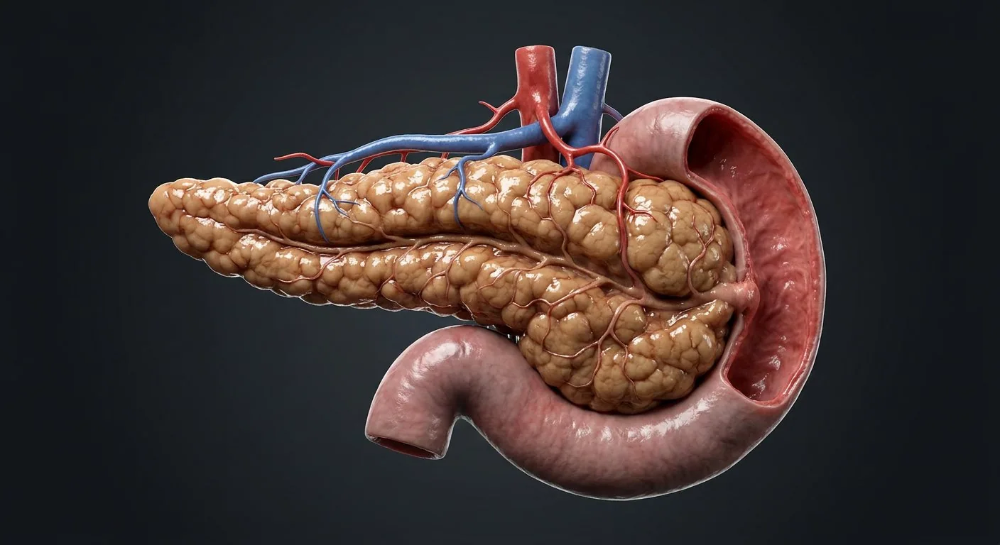

How this part of the body works
The pancreas is both an exocrine and an endocrine organ. Acinar cells package trypsinogen, lipase and amylase into zymogen granules and secrete them into the pancreatic duct, which joins the common bile duct at the hepatopancreatic ampulla; bicarbonate-rich fluid from duct cells neutralises gastric acid. Scattered among the acini, the islets of Langerhans secrete insulin (beta cells), glucagon (alpha), somatostatin (delta) and pancreatic polypeptide directly into blood, minute-to-minute control of glucose.
Read the anatomy, part by part
These 9 structures correspond to the chapter’s regional illustration or schematic. Each entry separates location, function and a clinical point.
Head
The broad end nestled in the C-loop of the duodenum, with the uncinate process hooking behind the superior mesenteric vessels.
What it doesHouses much of the exocrine tissue and the terminal duct.
Clinical connectionA tumour here compresses the common bile duct, causing painless obstructive jaundice and a palpable gallbladder (Courvoisier's law).
Neck
The short constriction in front of the portal vein's formation.
What it doesLandmark separating head from body; the portal vein forms behind it.
Clinical connectionIt is the transection line in a Whipple procedure and in distal pancreatectomy.
Body
The middle third crossing the aorta and vertebral body, behind the stomach in the lesser sac.
What it doesCarries the duct and splenic vessels along its borders.
Clinical connectionIt lies against the splenic vein — thrombosis of that vein from pancreatitis causes isolated gastric varices.
Tail
The narrow left end reaching the splenic hilum between the layers of the splenorenal ligament.
What it doesContains a high density of islets.
Clinical connectionIt is easily injured during splenectomy, causing a postoperative pancreatic fistula.
Main pancreatic duct
Runs the length of the gland from tail to head, joining the common bile duct at the ampulla in the second part of duodenum.
What it doesDelivers ~1.5 L of enzyme- and bicarbonate-rich juice daily.
Clinical connectionA "double duct sign" (dilated pancreatic and bile ducts) on imaging suggests a head tumour.
Accessory duct (of Santorini)
An inconstant second duct opening at the minor duodenal papilla above the main one.
What it doesProvides alternative drainage, mainly of the head.
Clinical connectionPancreas divisum — failure of the duct systems to fuse — drains most secretions through this narrow route and can cause recurrent pancreatitis.
Hepatopancreatic ampulla
The common channel of bile and pancreatic ducts, guarded by the sphincter of Oddi at the major duodenal papilla.
What it doesGates the entry of bile and pancreatic juice into the duodenum.
Clinical connectionA gallstone impacted here causes both biliary colic and acute pancreatitis.
Islets of Langerhans
1–1.5 million microscopic clusters of alpha (glucagon), beta (insulin, amylin), delta (somatostatin) and PP cells, richly capillarised.
What it doesMinute-to-minute control of blood glucose, plus intermediary metabolism.
Clinical connectionAutoimmune destruction of beta cells causes type 1 diabetes; resistance to insulin with beta-cell exhaustion causes type 2.
Acinar cells & ductules
Grape-like clusters of enzyme-packed cells draining into centroacinar cells and ductules.
What it doesSecrete the pro-enzymes for digesting protein, fat and carbohydrate.
Clinical connectionPremature activation of trypsin inside acinar cells is the initiating event of acute pancreatitis.
Deeper structures and tissue layers
These 12 additional entries give anatomical context. They are deliberately not assigned a photographic pin on the regional image.
Uncinate process
Hook-shaped pancreatic head extension passing posterior to superior mesenteric vessels.
What it doesCompletes deep head contour around the mesenteric root.
Clinical connectionA mass may involve mesenteric vessels.
Pancreaticoduodenal groove
Anatomical interface where pancreatic head contacts the duodenal curve.
What it doesRelates gland secretions to duodenal entry.
Clinical connectionInflammation here can affect both organs.
Minor duodenal papilla
Small mucosal opening receiving the accessory pancreatic duct when patent.
What it doesProvides an accessory pancreatic drainage route.
Clinical connectionDrainage pattern varies with duct fusion.
Major duodenal papilla
Mucosal projection receiving ampulla or pancreatic and bile duct openings.
What it doesDelivers bile and pancreatic juice to descending duodenum.
Clinical connectionGallstones at this level may obstruct both ducts.
Sphincter of Oddi
Smooth-muscle complex surrounding terminal biliary and pancreatic outflow.
What it doesControls flow into duodenum and limits reflux.
Clinical connectionDysfunction can mimic obstructive pain.
Exocrine acinus
Cluster of enzyme-secreting serous cells surrounding a small lumen.
What it doesReleases digestive enzyme precursors into duct system.
Clinical connectionAcinar injury contributes to pancreatitis.
Centroacinar cells
Pale cells at acinus-to-intercalated-duct transition.
What it doesStart ductal bicarbonate-rich secretion.
Clinical connectionThey distinguish pancreatic from salivary acini histologically.
Intercalated duct
Smallest exocrine duct receiving secretion from acinar lumen.
What it doesConveys and modifies pancreatic juice.
Clinical connectionDuct obstruction impairs exocrine drainage.
Beta cells
Pancreatic islet endocrine cells concentrated variably within islets.
What it doesSecrete insulin in response to glucose.
Clinical connectionLoss or dysfunction contributes to diabetes.
Alpha cells
Islet endocrine cells intermingled with other endocrine populations.
What it doesRelease glucagon during falling glucose.
Clinical connectionGlucagon raises hepatic glucose availability.
Delta cells
Islet cells producing somatostatin.
What it doesModulate neighboring endocrine and exocrine secretion.
Clinical connectionIslet composition is not fixed across the gland.
Pancreatic stellate cells
Periacinar and periductal mesenchymal cells activated by injury.
What it doesRegulate extracellular matrix turnover.
Clinical connectionPersistent activation contributes to pancreatic fibrosis.
Five questions about Pancreas
Short answers grounded in the structures described above. Use the illustrated guide for anatomical context.
What does the pancreas do?
Its exocrine tissue releases digestive enzymes into the small intestine. Endocrine islets release hormones such as insulin and glucagon into the blood.
Where is the pancreas located?
It lies behind the stomach across the upper abdomen. Its head sits near the duodenum, while its tail reaches toward the spleen.
Where is the head of the pancreas?
The broad end nestled in the C-loop of the duodenum, with the uncinate process hooking behind the superior mesenteric vessels. Function: Houses much of the exocrine tissue and the terminal duct.
Where is the main pancreatic duct located?
Runs the length of the gland from tail to head, joining the common bile duct at the ampulla in the second part of duodenum. Function: Delivers ~1.5 L of enzyme- and bicarbonate-rich juice daily.
What is the function of the acinar cells & ductules?
Function: Secrete the pro-enzymes for digesting protein, fat and carbohydrate. Grape-like clusters of enzyme-packed cells draining into centroacinar cells and ductules.
Related anatomy guides
Follow these connected structures and body systems in the illustrated atlas.
 LiverThe body's chemical plant: metabolism, bile, clotting factors, detoxification and storage.↗
LiverThe body's chemical plant: metabolism, bile, clotting factors, detoxification and storage.↗ Stomach & intestinesThe gastrointestinal tract from oesophagus to rectum, with the villus that does the absorbing.↗
Stomach & intestinesThe gastrointestinal tract from oesophagus to rectum, with the villus that does the absorbing.↗ SpleenThe largest lymphoid organ: a blood filter, immune sentinel and red-cell graveyard.↗
SpleenThe largest lymphoid organ: a blood filter, immune sentinel and red-cell graveyard.↗ Thyroid glandA butterfly gland of follicles that sets the body's metabolic rate.↗
Thyroid glandA butterfly gland of follicles that sets the body's metabolic rate.↗Further reading
General anatomy references and related source chapters for continued study. These links do not make the digital illustrations clinical images or certify every anatomical variant.
This educational material does not provide medical advice, diagnosis or treatment. A named clinical reviewer has not been claimed for this page.
Open the interactive plate, pins, animated schematic and self-test.